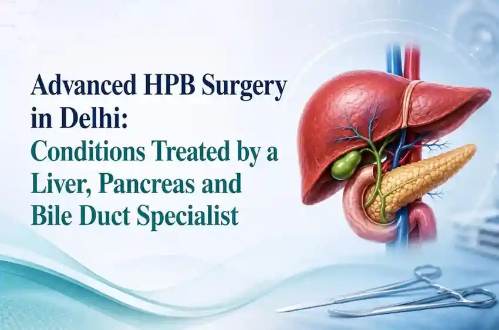
Advanced HPB Surgery in Delhi: Conditions Treated
26 Jun 2026
Learn which liver, pancreas, gallbladder, and bile duct conditions are treated with advanced HPB surgery in Delhi by a specialist HPB surgeon.
Read More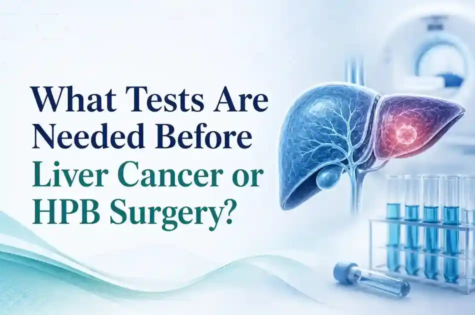
Tests Before Liver Cancer Surgery: What to Know
25 Jun 2026
Pre-surgery tests for liver cancer help doctors plan the best treatment and ensure you're ready for surgery. Learn about imaging, blood work, and other key tests.
Read More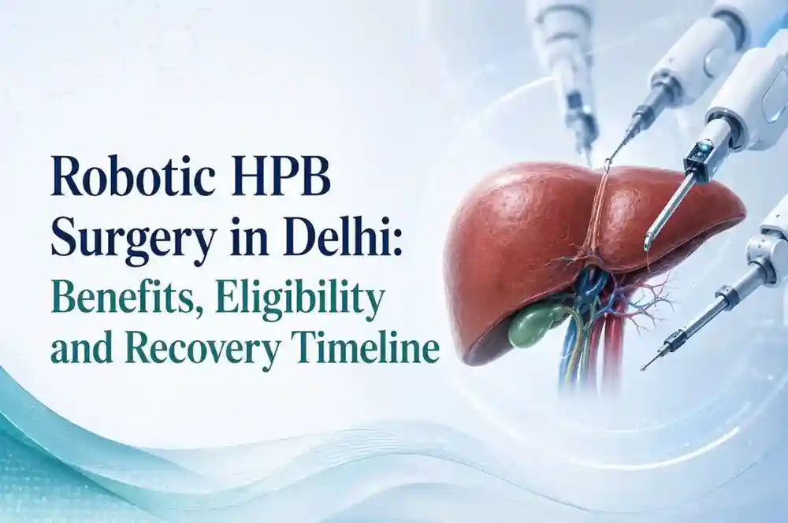
Robotic HPB Surgery in Delhi: Benefits, Recovery, and What to Expect
24 Jun 2026
Robotic HPB surgery in Delhi offers precision, smaller incisions, and faster recovery for liver, pancreas, and bile duct conditions. Learn about benefits, recovery, and when it's the right choice.
Read More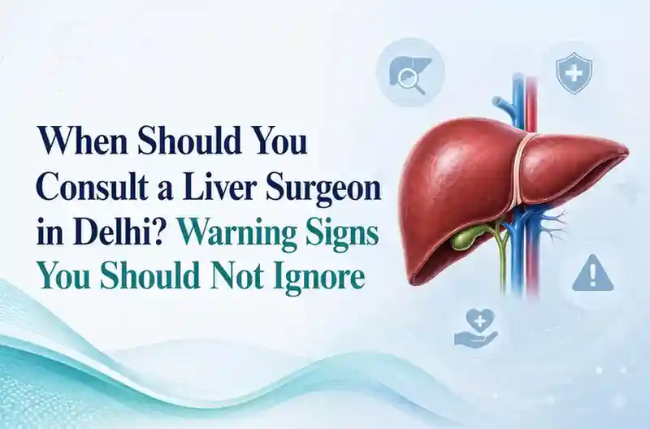
When Should You Consult a Liver Surgeon in Delhi? Warning Signs You Should Not Ignore
24 Jun 2026
Learn the warning signs that indicate you need to consult a liver surgeon. Discover when jaundice, swelling, liver tumors, or abnormal liver tests require specialist attention.
Read More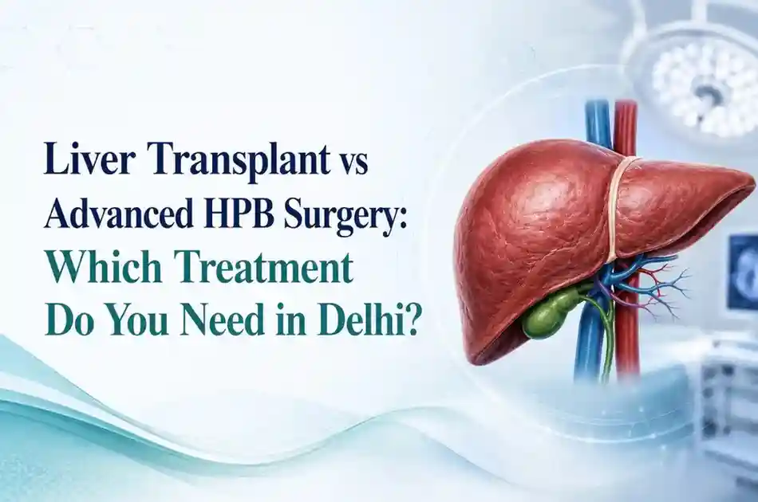
Liver Transplant vs Advanced HPB Surgery: Which Treatment Do You Need in Delhi?
23 Jun 2026
A portion of their liver to someone with liver failure. This blog explains the process, benefits, risks, and what families need to know before making this important decision.
Read More
Living Donor Liver Transplant in Delhi: What Families Need to Know Before Deciding
29 May 2026
Living donor liver transplant in Delhi is a life-saving procedure where a healthy person donates a portion of their liver to someone with liver failure. This blog explains the process, benefits, risks, and what families need to know before making this important decision.
Read More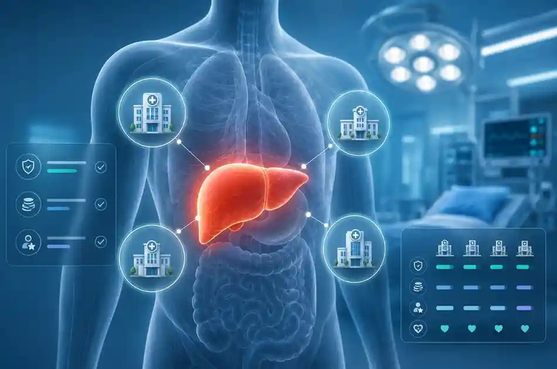
Best Liver Hospital in Delhi 2026: Top Centres for Treatment, Surgery & Transplant
27 May 2026
Compare the top liver hospitals in Delhi, including Fortis, AIIMS, ILBS, Max, Apollo and more. Find out which centre suits your condition, budget, and urgency.
Read More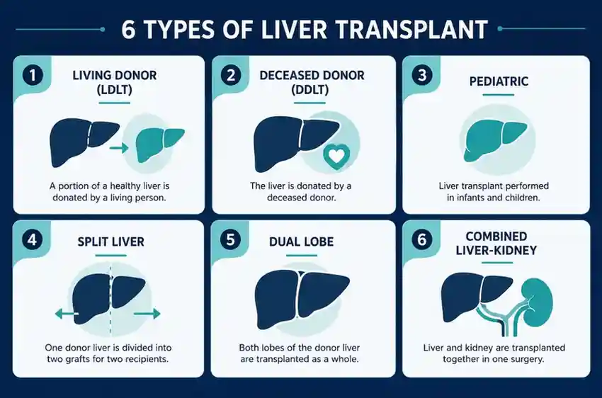
Liver Transplant in Delhi 2026: The Complete Patient and Family Guide
25 May 2026
A complete guide to liver transplant in Delhi: when it's needed, types of transplant, hospital choice, cost, recovery timeline, and what to expect every step of the way.
Read MoreHow to Find the Best Liver Transplant Surgeon in Delhi: A Patient's Guide
22 May 2026
Looking for the best liver transplant surgeon in Delhi? Learn what credentials matter, what questions to ask, and why Dr Ashish George at Fortis is a trusted choice.
Read More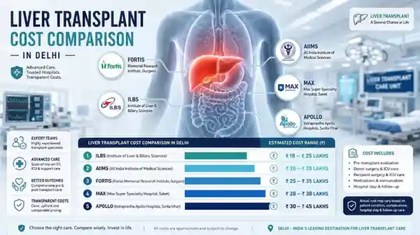
Liver Transplant Cost in Delhi 2026: Fortis, AIIMS, ILBS, Max & Apollo Compared
18 May 2026
Compare liver transplant costs in Delhi across Fortis, AIIMS, ILBS, Max & Apollo. Get a clear breakdown of what each hospital charges in 2026.
Read More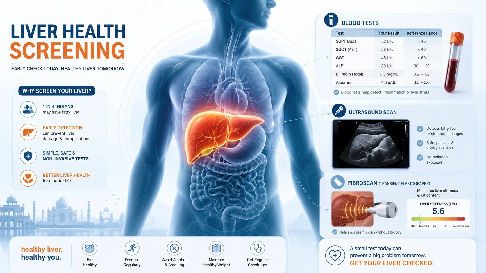
Liver Disease Screening: When Should You Get Tested and Which Tests Matter Most?
08 May 2026
Learn when to get liver screening, key tests like LFT, ultrasound, FibroScan, and early warning signs. A complete guide to protecting your liver health.
Read More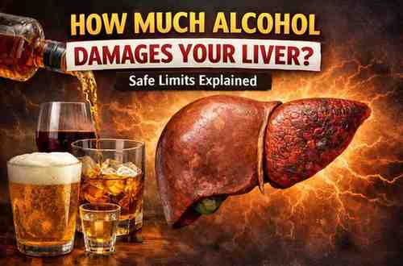
How Much Alcohol Damages Your Liver? Safe Limits Explained
21 Apr 2026
Learn how much alcohol is safe and how it affects your liver. Understand risks, early signs, and when to consult a liver surgeon in Delhi for expert care.
Read More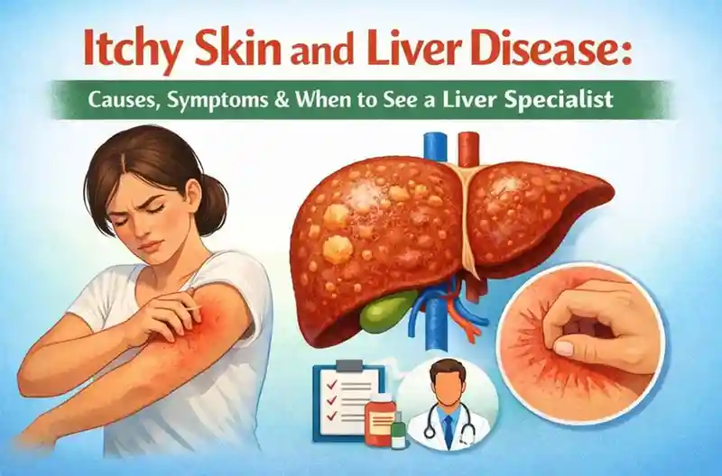
Itchy Skin and Liver Disease: What’s the Connection
16 Apr 2026
Is itchy skin a sign of liver disease? Learn the causes, symptoms, and treatment options. Consult a trusted liver surgeon in Delhi for expert care.
Read More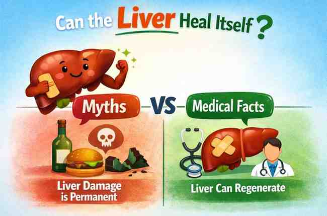
Can the Liver Heal Itself? Myths vs Medical Facts
13 Apr 2026
Can the liver heal itself? Learn myths vs medical facts, stages of liver damage, and when to consult a liver surgeon in Delhi for expert care.
Read More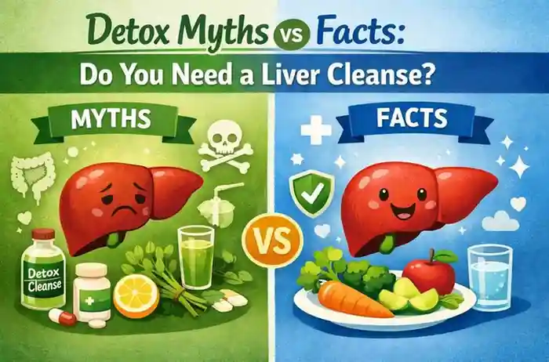
Detox Myths vs Facts: Do You Really Need a Liver Cleanse?
08 Apr 2026
Discover the truth about liver detox myths vs facts. Learn if you really need a liver cleanse and when to consult liver surgeons in Delhi.
Read More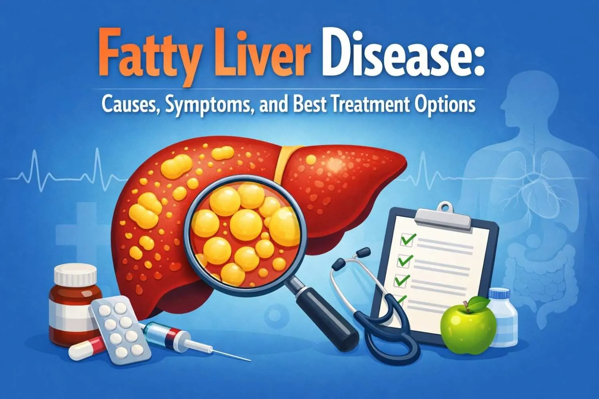
Fatty Liver Disease: Causes, Symptoms, and Best Treatment Options
3 Apr 2026
Discover how fatty liver disease progresses, warning signs to watch for, and advanced treatment options available in India in 2026.
Read More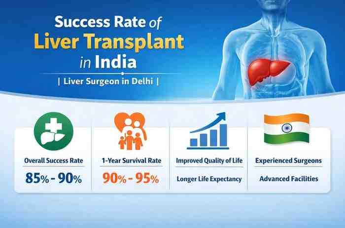
Is My Family Member a Candidate for Liver Transplant? Success Rate of Liver Transplant in India | Liver Surgeon in Delhi
30 Mar 2026
Learn the success rate and risks of liver transplant in India. Expert guidance by Liver Surgeons. Consult a liver surgeon in Delhi today.
Read MoreIs My Family Member a Candidate for Liver Transplant? From Fatty Liver to Cirrhosis: The 4-Stage Progression No One Warns You About And How to Stop It
27 Mar 2026
How does fatty liver progress to cirrhosis? A liver specialist explains each stage, what happens in the liver, and how to stop the progression before it becomes irreversible. Expert guide 2026.
Read MoreWhen Do You Need a Liver Surgeon in Delhi? Warning Signs Explained
25 Mar 2026
Know the key warning signs of liver disease and when to consult a liver surgeon in Delhi. Expert care and advanced treatment at LiverSurgeons.com.
Read More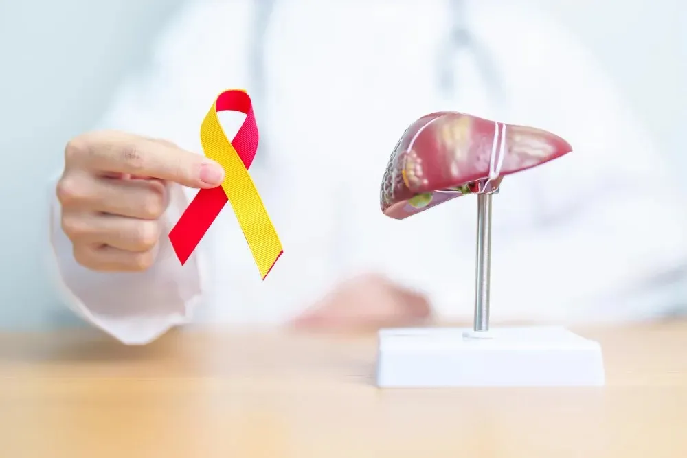
Is My Family Member a Candidate for Liver Transplant? Liver Cancer Caught Early vs Late: Why Timing Changes Everything — A Patient's Guide to HCC Stages and Treatment
15 Mar 2026
A liver specialist's guide to HCC stages, treatment options, and why early detection dramatically changes survival outcomes. Expert 2026 guide by Dr. Ashish George, Fortis Hospital Delhi.
Read More
Is My Family Member a Candidate for Liver Transplant? Hepatitis B vs Hepatitis C: Which Is More Dangerous — and What Every Indian Family Needs to Know in 2026
10 Mar 2026
A liver specialist's honest comparison of Hepatitis B and C — symptoms, risks, treatment, and what Indian families need to know in 2026. Expert patient guide by Dr. Ashish George, Fortis Hospital Delhi.
Read More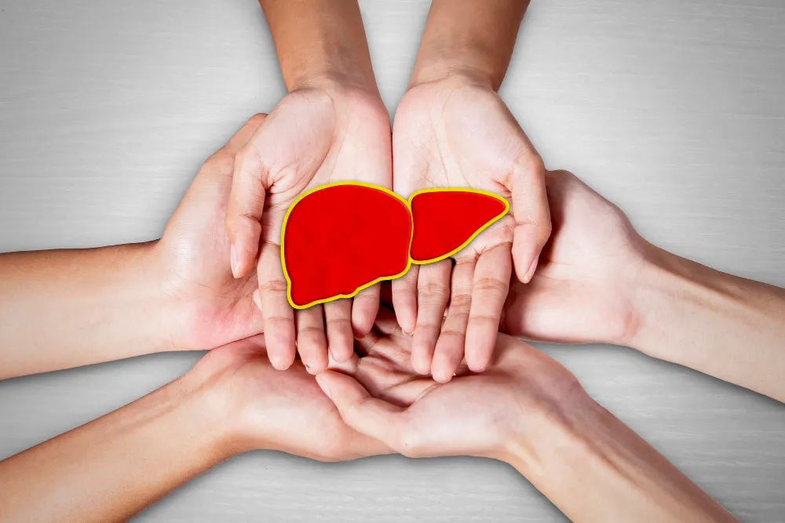
Is My Family Member a Candidate for Liver Transplant? A Plain-Language Guide to MELD Scores, Eligibility and What Happens Next
05 Mar 2026
Confused about liver transplant eligibility and MELD scores? Dr. Ashish George explains who qualifies, how decisions are made, and what families can expect — in plain language. Read the 2026 guide.
Read More
Fatty Liver Disease Symptoms, Stages & Treatment in India (2026 Guide)
25 Feb 2026
Discover how fatty liver disease progresses, warning signs to watch for, and advanced treatment options available in India in 2026.
Read More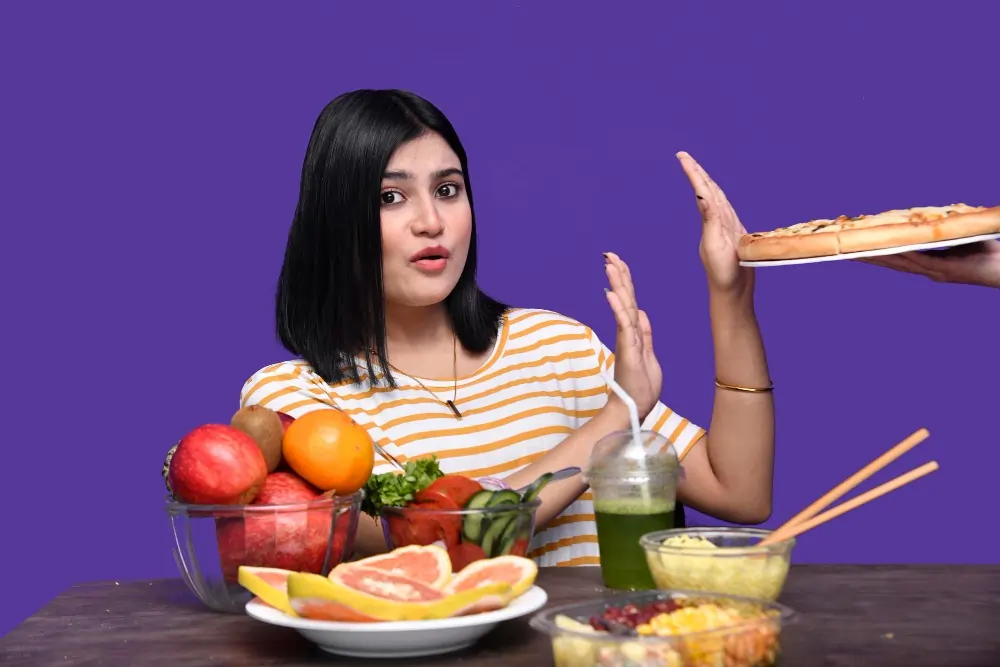
फैटी लिवर में क्या नहीं खाना चाहिए: Foods to Avoid + हेल्दी स्वैप्स (हिंदी)
17 Feb 2026
फैटी लिवर में कौन से खाने से बचें? मीठा, शुगर ड्रिंक, मैदा, तला हुआ, पैकेज्ड फूड, अल्कोहल और इनके आसान Indian swaps हिंदी में।
Read More
फैटी लिवर डाइट चार्ट (हिंदी में): 7 दिन का आसान इंडियन मील प्लान
17 Feb 2026
फैटी लिवर में क्या खाएं? 7 दिन का डाइट चार्ट, नाश्ता-लंच-डिनर प्लान, हेल्दी स्नैक्स, eating out tips और आसान swaps हिंदी में
Read More
फैटी लिवर के लक्षण (हिंदी में): शुरुआती संकेत, रेड फ्लैग्स और कब डॉक्टर को दिखाएं
17 Feb 2026
फैटी लिवर के लक्षण क्या हैं? शुरुआती संकेत, रेड फ्लैग्स, कब डॉक्टर को दिखाएं, जरूरी टेस्ट और safe next steps आसान हिंदी में जानें।
Read More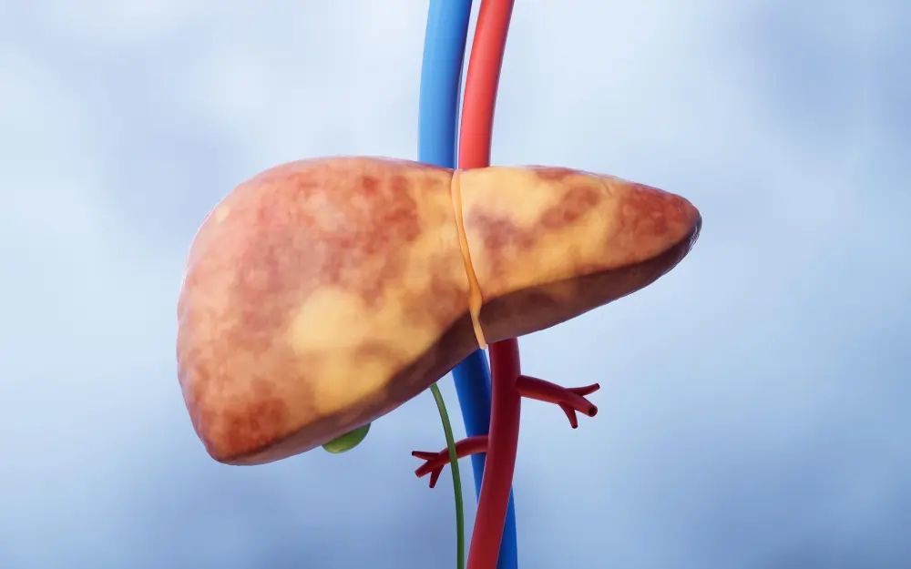
फैटी लिवर क्या है? लक्षण, कारण, टेस्ट, ग्रेड और इलाज
17 Feb 2026
फैटी लिवर क्या है, इसके लक्षण, कारण, जरूरी टेस्ट, ग्रेड 1/2/3 का मतलब, डाइट और इलाज जानें। आसान हिंदी में गाइड।
Read More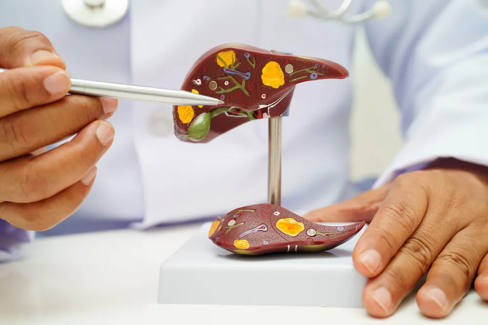
Understanding the Stages of Liver Cirrhosis: Symptoms, Tests, Treatment, and When to Consider a Transplant
17 Feb 2026
Learn the stages of liver cirrhosis, key symptoms, danger signs, tests, treatment options, and when doctors advise transplant evaluation.
Read MoreLiver Transplant Success Rate in India (2026): What the Numbers Really Mean
16 Feb 2026
Discover liver transplant success rates in India, what 1-year and 5-year survival means, and the key factors that influence outcomes.
Read MoreThe Global Price Gap: Is a Liver Transplant in Delhi Truly the Better Choice?
30 Jan 2026
Compare liver transplant cost in Delhi vs. Western countries. Save 90% with the best liver transplant surgeon in Delhi. Expert care and high success rates
Read MoreWhy Delhi is the Emerging Global Hub for Liver Transplants
20 Jan 2026
Find out why Delhi is a global hub for liver transplants. With 39.5% of India's volume and 95% success rates, Delhi offers elite, affordable care
Read MoreTop 10 Hepatologists in Delhi: Your Guide to Finding the Right Liver Specialist
15 Jan 2026
Discover Delhi's top 10 hepatologists with 95%+ success rates. Expert liver transplant surgeons, robotic specialists, fatty liver experts. Find the best doctor for your needs in 2026
Read More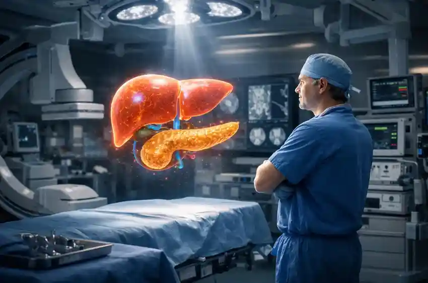
Top 10 HPB Surgeons in Delhi: Expertise, Success Rates, and Patient Care Compared
10 Jan 2026
Choosing a surgeon? We compare the top 10 HPB specialists in Delhi on crucial factors others miss. Make an informed decision
Read More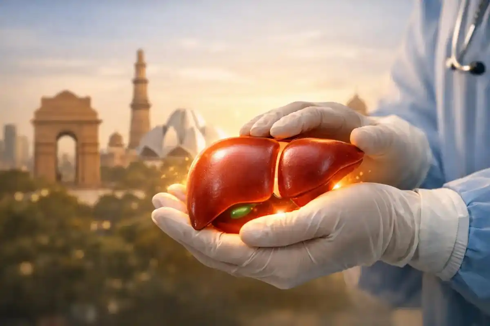
Top 10 Liver Transplant Surgeons in Delhi: Your Guide to Expertise and Trust
05 Jan 2026
Looking for the best liver transplant surgeon in Delhi? Our guide lists top 10 experts like Dr. Ashish George and reveals how to choose your ideal doctor
Read More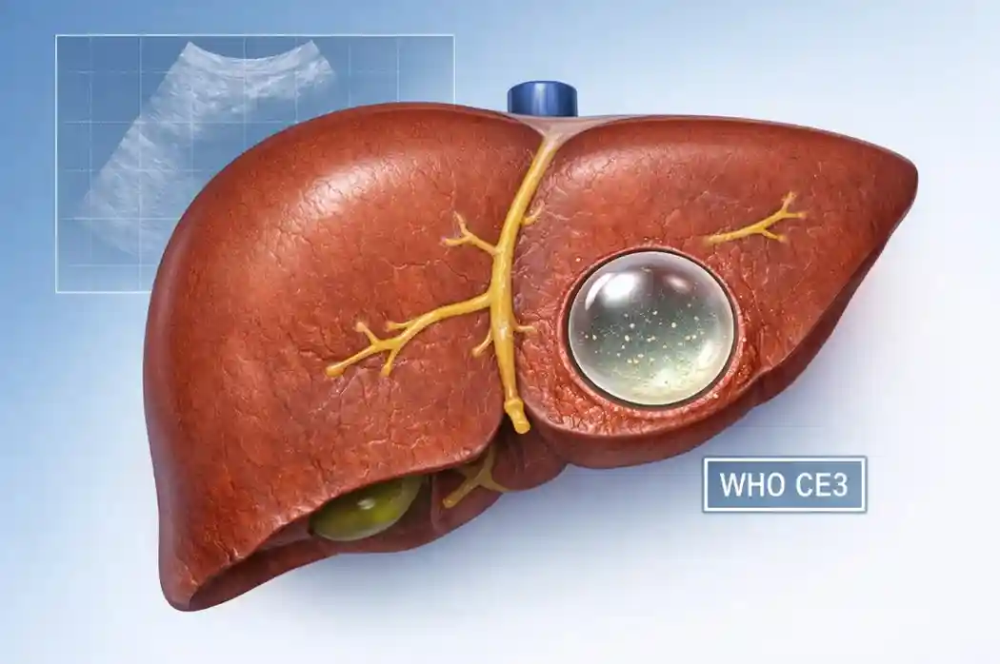
Hydatid Cyst of the Liver: What You Need to Know (And What Others Won’t Tell You)
31 Dec 2025
Discover hydatid cyst of liver: causes, symptoms, diagnosis & treatment. Learn anaphylaxis risks, WHO staging & why imaging matters more than symptoms. Expert guide by liver surgeon in Delhi
Read More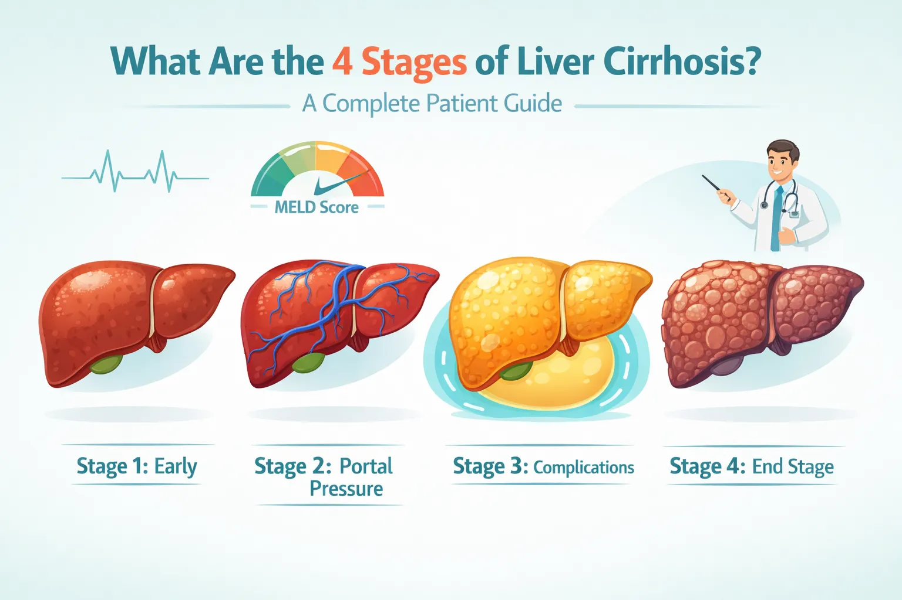
What Are the 4 Stages of Liver Cirrhosis? A Complete Patient Guide
24 Dec 2025
Understand the 4 stages of liver cirrhosis, early warning signs, reversibility chances, MELD score meaning, and when to consider liver transplant with expert guidance from a liver transplant surgeon in Delhi
Read More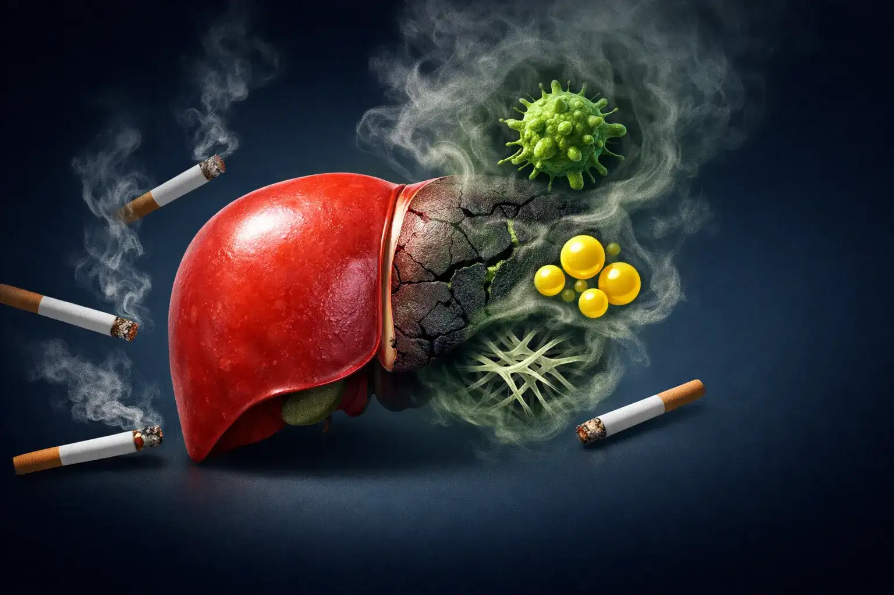
How Does Smoking Damage Your Liver? 7 Key Mechanisms Explained
20 Dec 2025
Discover 7 hidden ways smoking sabotages your liver, from DNA damage to the NAD+ crisis. Learn how toxins cause lasting harm and the first steps to healing
Read More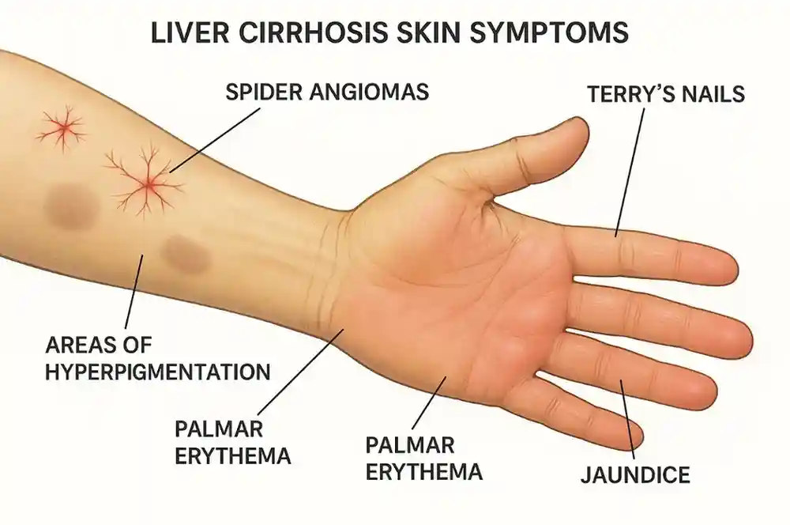
Liver Cirrhosis Skin Symptoms: What These Warning Signs Mean
09 Dec 2025
Learn 10+ liver cirrhosis skin symptoms including spider angiomas, palmar erythema & jaundice. Early detection guide from Dr. Ashish George
Read More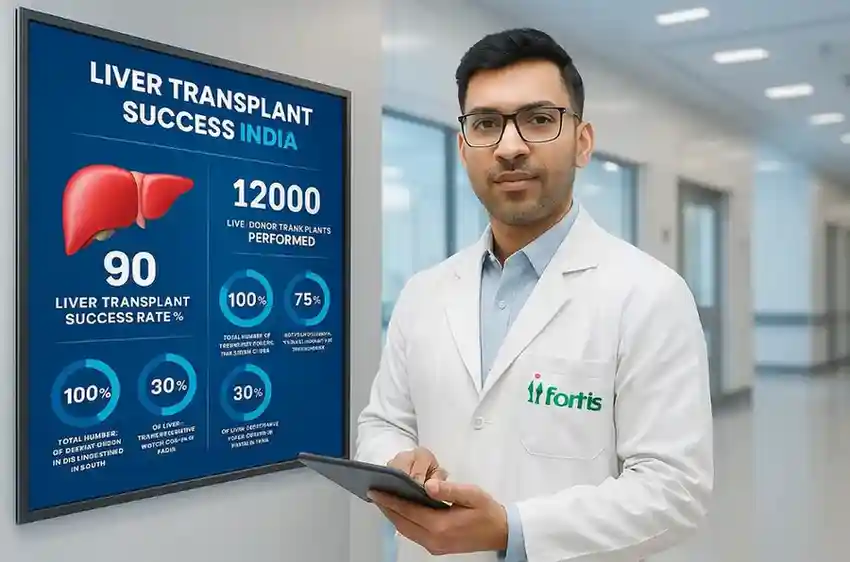
Insights into Liver Transplant Success Rates in India: Key Factors, Statistics, and Expert Perspectives
03 Dec 2025
What are the success rates of liver transplants in India? Discover key factors, expert insights, and essential statistics to guide your transplant decision.
Read More
Life After Liver Transplant: Diet, Medication, and Returning to Normalcy
27 Nov 2025
Discover the essential steps for a successful liver transplant recovery. Learn about diet, medication, and tips for returning to normal life post-surgery.
Read More
Pediatric Liver Transplant: A Parent's Guide to a Life-Saving Procedure
20 Nov 2025
Discover the life-saving journey of pediatric liver transplant. Expert insights, costs, and recovery tips for children's liver transplant
Read More
Who is a Candidate for a Living Liver Donation? A Detailed Checklist of Requirements
15 Nov 2025
See if you qualify as a living liver donor. Our complete checklist covers all medical, age & health requirements. See if you meet all requirements.
Read More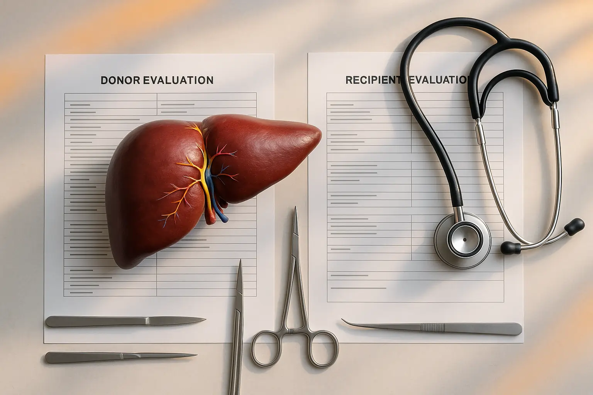
Living Donor Liver Transplant: A Comprehensive Guide for Donors and Recipients
10 Nov 2025
Walk through the living donor liver transplant journey. Learn about evaluation, surgery, risks & recovery for donors & recipients. Find hope & courage.
Read More
The Ultimate FAQ for Liver Transplant Patients: MELD Score, Wait Times, and Post-Op Life
5 Nov 2025
Liver transplant FAQ: MELD score, wait times, recovery tips, medication info, rejection signs, expert answers by Delhi’s top transplant surgeon.
Read More
Liver Resection (Hepatectomy): What to Expect Before, During, and After Surgery
25 Oct 2025
Facing liver surgery? Get clear answers. This guide covers your hepatectomy from pre-op checklists to at-home recovery and long-term care.
Read More
What is HPB Surgery? A Patient's Guide to Complex Liver, Pancreas, and Bile Duct Operations
20 Oct 2025
Facing HPB surgery in Delhi? Get clarity from a top surgeon's guide to complex liver & pancreas operations. Understand your path to recovery and wellness.
Read More
Fatty Liver Disease (MASLD): How to Reverse Damage and Protect Your Liver
15 Oct 2025
Diagnosed with fatty liver? A top Delhi surgeon shares his proven plan to reverse liver damage with simple, effective diet & lifestyle changes.
Read More
Cirrhosis of the Liver: A Complete Guide to Stages, Symptoms, and Life Expectancy
10 Oct 2025
Facing a cirrhosis diagnosis? A top liver surgeon explains the stages, symptoms & life expectancy. Understand your prognosis and find hope in new treatments.
Read More
10 Warning Signs of Liver Problems You Shouldn't Ignore
05 Oct 2025
Fatigued or unwell? Your liver might be sending signals. Learn the 10 key warning signs of liver damage and when you need to see a doctor.
Read More
Can Liver Damage Be Reversed? The Truth About Liver Regeneration
28 Sep 2025
Can liver damage be reversed? A top surgeon reveals the truth about liver regeneration, the stages of damage, and the steps you can take to help it heal.
Read More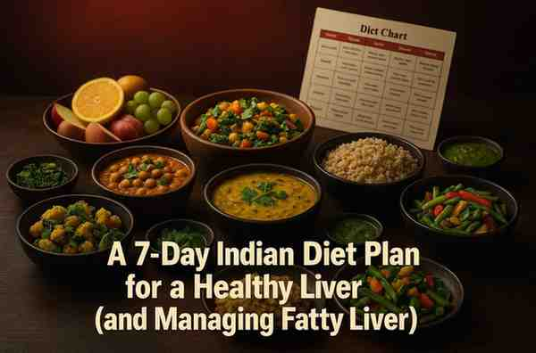
A 7-Day Indian Diet Plan for a Healthy Liver (and Managing Fatty Liver)
24 Sep 2025
Heal your fatty liver with a simple 7-day Indian diet plan by a top surgeon. Discover easy, delicious meals to naturally restore your liver's health.
Read More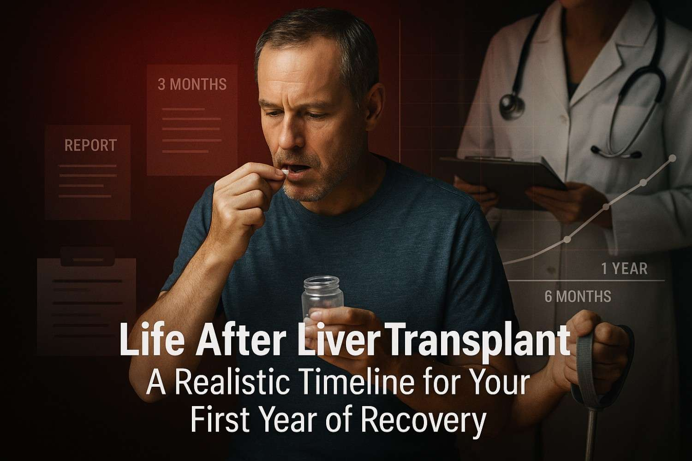
Life After Liver Transplant: A Realistic Timeline for Your First Year of Recovery
20 Sep 2025
What's life like after a liver transplant? A top Delhi expert details your 1-year recovery timeline, from hospital care to getting back to normal life.
Read More
Robotic Liver Surgery vs. Laparoscopic vs. Open Surgery: Which is Right for You?
15 Sep 2025
Compare robotic, laparoscopic, and open liver surgery. Discover which approach suits your condition best with expert guidance from Dr. Ashish George.
Read More
Life After Liver Transplant: A 12-Month Roadmap to Recovery, Diet, and Medication Management
05 Sep 2025
What is a MELD Score? How It Affects Your Position on the Transplant Waitlist.
Read More
Life After Liver Transplant: A 12-Month Roadmap to Recovery, Diet, and Medication Management
31 Aug 2025
Your expert 12-month roadmap to life after a liver transplant in Delhi. Covers diet, meds, and recovery milestones to help you heal confidently.
Read More
Living Donor Liver Transplant: Is It Safe for the Donor? A Detailed Risk-Benefit Analysis
30 Aug 2025
A living donor liver transplant is a life-saving procedure where surgeons transplant a portion of a healthy liver from a living person into a recipient.
Read More
Acute Liver Failure (ALF): Understanding the Race Against Time for an Emergency Transplant
30 Aug 2025
Facing Acute Liver Failure? A top Delhi surgeon explains the urgent signs & why an emergency transplant could be the only life-saving option. Get answers now.
Read More